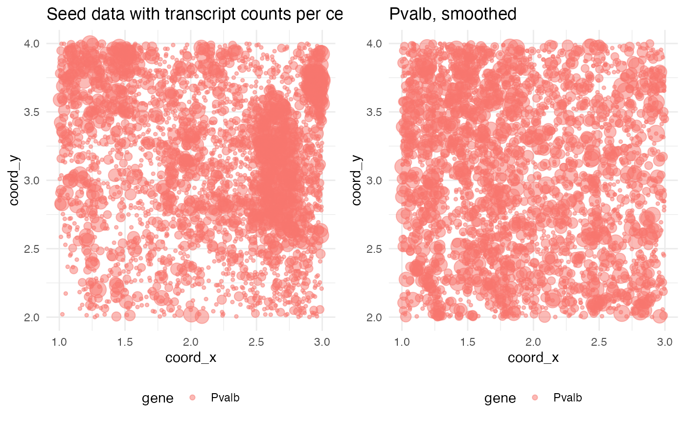
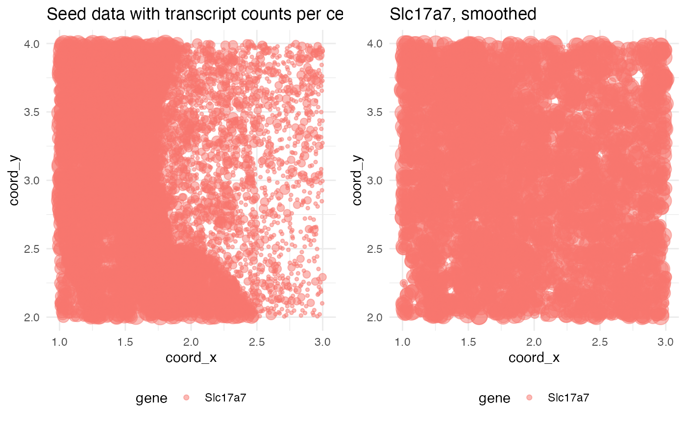
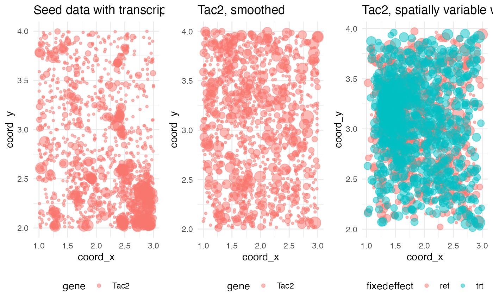
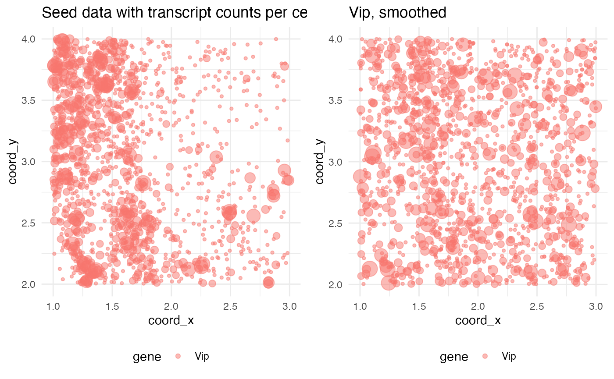

Benchmarks and comparisons
Michael Barkasi
2026-01-24
tutorial_benchmarks.RmdIntroduction
The purpose of wispack is to test for functional spatial effects (FSEs) using spatial transcriptomics data. Consider a two-level covariate (e.g., control vs treatment, healthy vs diseased, left vs right hemisphere) and spatial coordinate (e.g., cortical depth, distance from a tumor, distance from a central vein in the liver). A gene is differentially expressed (DE) with respect to if its overall expression level depends on the level of . A gene is spatially variable (SVG) if its expression level depends on spatial coordinate . A covariate has a FSE on a gene if the spatial distribution of that gene with respect to depends on the level of . (The adjective “functional” is included because it’s assumed that the distribution of the gene with respect to has biological significance.)

Comparison between testing for differentially expressed genes, spatially variable genes, and genes with function spatial effects. For visualization purposes, mouse brain slices represent the tissue sample and laterality (left vs right hemisphere) represents a fixed effect (i.e., covariate).
To the best of our knowledge, wisp models provide the only statistical framework for testing for FSEs and (hence) wispack is the only software for FSE testing. Wisp models allow for FSE testing because they explicitly model the spatial distribution of gene expression in terms of parameters which can themselves depend on some other covariate. A coarse-grain work-arounds for FSE testing would be to include an interaction term between a spatial variable and another covariate of interest in a linear model, but this approach could only capture an additive effect constant across space. Wisp models, on the other hand, can capture complex effects on density gradients, change-point locations, and local expression levels.
This tutorial will use semi-synthetic simulation data to benchmark wispack’s ability to detect FSEs. In order to compare FSE testing to DE and SVG testing, we will also analyze the simulations with DESeq2 from Love et al 2014 and ELLA from Wang and Zhou 2025.
Simulating data
Seeding simulations with real data
To simulate data with known DE genes, SVGs, and FSEs, we begin with real spatial transcriptomics data from the Allen Institute. This data set, described by Yao et al 2023, contains coronal brain slices from an adult male mouse imaged in the Vizgen MERSCOPE platform with a 500 gene panel. Wispack includes a csv file with counts for four marker genes from three slices: Pvalb (parvalbumin neurons), Slc17a7 (glutamatergic neurons), Tac2 (somatostatin neurons), and Vip (vasoactive intestinal peptide neurons).
countdata <- read.csv(
system.file(
"extdata",
"Allen_data.csv",
package = "wispack"
)
)
print(head(countdata))## count cell_id slice_num gene coord_x coord_y
## 1 10 1018093344200990605 29 Slc17a7 3.485960 4.946534
## 2 1 1018093344200990605 29 Vip 3.485960 4.946534
## 3 1 1018093344101180865 29 Tac2 4.062627 5.040059
## 4 1 1018093344101180865 29 Slc17a7 4.062627 5.040059
## 5 2 1018093344100990765 29 Slc17a7 3.502277 4.956870
## 6 1 1018093344102270476-1 29 Pvalb 6.834409 5.008881This data can be visualized as follows:
ggplot(countdata, aes(x = coord_x, y = coord_y, color = gene)) +
geom_point(size = 0.25) +
facet_wrap(~ slice_num) +
ggtitle("Seed data: Three coronal slices from Allen MERFISH data") +
theme_minimal() +
theme(
panel.background = element_rect(fill = "white", colour = NA),
plot.background = element_rect(fill = "white", colour = NA))
The point of starting with real data is to ensure that the simulations contain genes with realistic transcript counts and distributions. We will seed the simulations with data from a mm region of slice 33.
seed_patch <- countdata[
countdata$slice_num == 33 &
countdata$coord_y >= 2 & countdata$coord_y <= 4 &
countdata$coord_x >= 1 & countdata$coord_x <= 3,]The cell ID column can also be dropped, as we will not use cell ID in the benchmarking.
seed_patch <- seed_patch[,c("count", "slice_num", "gene", "coord_x", "coord_y")]Let’s visualize the seed patch. Note that in this plot (and the previous one), a single dot is used for each cell coordinate containing at least one transcript from each gene. Thus, some dots may represent multiple transcripts from the same gene in the same cell.
ggplot(seed_patch, aes(x = coord_x, y = coord_y, color = gene)) +
geom_point(size = 0.5) +
ggtitle("Seed patch: 2x2 mm region from slice 33") +
theme_minimal() +
theme(
panel.background = element_rect(fill = "white", colour = NA),
plot.background = element_rect(fill = "white", colour = NA))
Simulating random and fixed effects
With a patch of seed data in hand, we need functions which will transform this data into simulations with known DE genes, SVGs, and FSEs. Specifically, we need three functions: one to simulate the random effects of inter-replicate noise, one to smooth spatial gene distribution to ensure no spatial variability in some conditions, and one to induce a known amount of spatial variability.
Random effects of inter-replicate noise will be simulated via a combination of affine transformation of spatial coordinates and Poisson resampling of counts. The following helper function makes a single replicate from input data:
# Helper function to make replicates
make_replicate <- function(
data,
rate_scalar = 0.5, # number between 0 and 1
affine_transform = NULL,
spatial_scalar = 0.05
) {
# Initialize a copy of the data to spatially transform
data_transformed <- data
# If none provided, make affine transformation to shift cells around
if (is.null(affine_transform)) {
Ax <- matrix(c(1,0,rnorm(1,0,spatial_scalar),1),2,2) # shear x
Ay <- matrix(c(1,rnorm(1,0,spatial_scalar),0,1),2,2) # shear y
As <- matrix(c(rnorm(1,0,spatial_scalar)+1, 0, 0, rnorm(1,0,spatial_scalar)+1),2,2) # scale
A <- As %*% Ay %*% Ax
} else {
A <- affine_transform
}
# Make scales to keep cells roughly in bounds
x_mid <- diff(range(data$coord_x))/2 + min(data$coord_x)
distx <- (data$coord_x - x_mid)^2
distx <- distx/max(distx)
y_mid <- diff(range(data$coord_y))/2 + min(data$coord_y)
disty <- (data$coord_y - y_mid)^2
disty <- disty/max(disty)
# Applied scaled affine transformation
data_transformed$coord_x = distx*data$coord_x + (1-distx)* (A[1,1]*data$coord_x + A[1,2]*data$coord_y)
data_transformed$coord_y = disty*data$coord_y + (1-disty)* (A[2,1]*data$coord_x + A[2,2]*data$coord_y)
# Poisson resampling of genes with scaled rate
data_transformed$count <- rpois(nrow(data), data_transformed$count * (2*rate_scalar))
return(data_transformed)
}Next, we need a function to smooth out the spatial distribution of the genes. This function will do this via shuffling spatial coordinates:
smooth_data <- function(
data
) {
idx_shuffled <- sample(nrow(data), nrow(data), replace = FALSE)
data$coord_x[idx_shuffled] <- data$coord_x
data$coord_y[idx_shuffled] <- data$coord_y
return(data)
}We will use a single function to both induce spatial variation on smoothed data and to create an inter-condition (``fixed’’) effect . Spatial variation will be induced for a gene by randomly selecting an attractor point in the data and pulling all other coordinates for transcripts of that gene towards it. An effect will be chosen by randomly selecting a value between zero and two, squaring that value, multiplying the counts for that gene by the resulting factor, and using the result as the rate for a random Poisson draw.
induce_SV <- function(
data_mixed,
gene,
attractor, # number between 0 and 1
effect = 0.5 # number between 0 and 1, to simulate fixed effects on rate
) {
# Get attractor coordinates
n_rows <- nrow(data_mixed)
attractor_idx <- as.integer(n_rows * attractor)
attractor_idx <- min(max(1, attractor_idx), n_rows)
coord_attractor <- c(data_mixed$coord_x[attractor_idx], data_mixed$coord_y[attractor_idx])
# Find distances from cells (i.e., transcripts) to attractor points
gene_mask <- data_mixed$gene == gene
x_diff <- data_mixed$coord_x[gene_mask] - coord_attractor[1]
y_diff <- data_mixed$coord_y[gene_mask] - coord_attractor[2]
d <- sqrt(x_diff^2 + y_diff^2)
# Normalize distance
d_norm <- 1 - d/max(d)
# Add noise to normalization by using it as mean for beta distribution
shape1 <- 1
shape2 <- (shape1 - (shape1 * d_norm)) / d_norm
n_points <- sum(gene_mask)
d_norm_noise <- rbeta(n_points, shape1, shape2)
# Scale differences with noisy normalized distance
x_diff_norm <- x_diff * d_norm_noise
y_diff_norm <- y_diff * d_norm_noise
# Apply attraction
data_attracted <- data_mixed
data_attracted$coord_x[gene_mask] <- data_mixed$coord_x[gene_mask] - x_diff_norm
data_attracted$coord_y[gene_mask] <- data_mixed$coord_y[gene_mask] - y_diff_norm
# Apply effect
data_attracted$count[gene_mask] <- rpois(sum(gene_mask), data_attracted$count[gene_mask] * (2*effect)^2)
return(data_attracted)
}Simulation functions
With functions for controling replicate noise, spatial variation, and functional spatial effects, we need to write a single function for generating a simulation from the seed patch. First, we start with two helper functions, one to bin spatial coordinates and one to extract ground-truth from a simulation.
# Helper function to bin data
bin_data <- function(
data,
n_bins = 100
) {
# Bin coordinates
data$bin_x <- cut(
data$coord_x,
breaks = seq(min(data$coord_x), max(data$coord_x), length.out = n_bins + 1),
include.lowest = TRUE,
labels = FALSE
)
data$bin_y <- cut(
data$coord_y,
breaks = seq(min(data$coord_y), max(data$coord_y), length.out = n_bins + 1),
include.lowest = TRUE,
labels = FALSE
)
# Return binned data
return(data)
}
# Function to extract ground-truth from sim data
ground_truth <- function(
sim
) {
# Extract ground-truth values for functional spatial effect values
fse_true <- sim$effect
# Extract ground-truth values for replicate random effect values
ran_true <- sim$replicate_rate_scalars
# Extract ground-truth values for whether a gene is SV
SVGs <- rep(FALSE, length(sim$genes))
names(SVGs) <- sim$genes
SVGs[sim$SVGs] <- TRUE
# Extract ground-truth values for whether a gene has FSE
FSEs <- rep(FALSE, length(sim$genes))
names(FSEs) <- sim$genes
FSEs[sim$FSEs] <- TRUE
# Return as list
return(
list(
fse_true = fse_true,
ran_true = ran_true,
SVGs = SVGs,
FSEs = FSEs
)
)
}Finally, we can write the main simulation function. We will run it once with plots to see how it works. Note that unlike the above plot of the seed patch, spots are scaled in size according to the transcript count per gene per cell.
# Load gridExtra for plotting
library(gridExtra)
# Define function to simulate data
simulate_data <- function(
seed_data,
n_bins = 100,
n_replicates = 4, # number of replicates per treatment condition
replicate_spatial_scalar = 0.05,
print_plots = FALSE
) {
# Get number and list of genes
genes <- sort(unique(seed_data$gene))
n_genes <- length(genes)
# Randomly select genes to be spatially variable
# ... will select at least one
SVGs <- sort(sample(n_genes, sample(n_genes, 1)))
n_SVGs <- length(SVGs)
# Randomly select SVGs to have FSEs
# ... may select none
FSEs <- c()
n_FSEs <- sample(c(0:n_SVGs), 1)
if (n_FSEs > 0) FSEs <- sort(sample(SVGs, n_FSEs))
# Select attractors (some may not be used)
attractor <- runif(n_genes)
# Select effects
# ... default is 0.5 * 2 = 1, i.e. no effect
effect <- rep(0.5, n_genes)
# ... apply effects to FSE genes, ensuring they are at least 5% different from no-effect
if (n_FSEs > 0) {
FSeffects <- runif(n_FSEs)
min_pos_effect <- sqrt(1.05)/2
min_neg_effect <- sqrt(0.95)/2
FSeffects[FSeffects >= 0.5 & FSeffects < min_pos_effect] <- min_pos_effect
FSeffects[FSeffects < 0.5 & FSeffects > min_neg_effect] <- min_neg_effect
effect[FSEs] <- FSeffects
}
# Smooth seed data (no spatial variation)
seed_data_smoothed <- smooth_data(seed_data)
# Initialize variables for reference and treatment data
sim_data_ref <- seed_data_smoothed
sim_data_trt <- seed_data_smoothed
# Smooth expression distribution, apply attractors, apply effects
for (g in c(1:n_genes)) {
# Print seed data and smoothed gene
if (print_plots) {
mask <- seed_data_smoothed$gene == genes[g]
plt_seed <- ggplot(seed_data[mask,], aes(x = coord_x, y = coord_y, color = gene, size = log(count + 1))) +
geom_point(alpha = 0.5) +
ggtitle("Seed data with transcript counts per cell") +
theme_minimal() +
guides(size = "none") +
theme(
legend.position = "bottom",
panel.background = element_rect(fill = "white", colour = NA),
plot.background = element_rect(fill = "white", colour = NA))
plt_smoothed <- ggplot(seed_data_smoothed[mask,], aes(x = coord_x, y = coord_y, color = gene, size = log(count + 1))) +
geom_point(alpha = 0.5) +
ggtitle(paste0(genes[g], ", smoothed")) +
theme_minimal() +
guides(size = "none") +
theme(
legend.position = "bottom",
panel.background = element_rect(fill = "white", colour = NA),
plot.background = element_rect(fill = "white", colour = NA))
plt <- list(plt_seed, plt_smoothed)
}
if (any(g == SVGs)) {
# Use attractor to induce spatial variability
sim_data_ref <- induce_SV(sim_data_ref, genes[g], attractor[g])
# Apply effects
sim_data_trt <- induce_SV(sim_data_trt, genes[g], attractor[g], effect[g])
# Print spatially variable gene
if (print_plots) {
FSE_title <- "with FSE"
if (!(g %in% FSEs)) FSE_title <- "without FSE"
mask <- sim_data_ref$gene == genes[g]
sim_data_plt <- rbind(
sim_data_ref[mask,],
sim_data_trt[mask,]
)
sim_data_plt$fixedeffect <- c(rep("ref", sum(mask)), rep("trt", sum(mask)))
plt_FSE <- ggplot(sim_data_plt, aes(x = coord_x, y = coord_y, color = fixedeffect, size = log(count + 1))) +
geom_point(alpha = 0.5) +
ggtitle(paste0(genes[g], ", spatially variable ", FSE_title)) +
theme_minimal() +
guides(size = "none") +
theme(
legend.position = "bottom",
panel.background = element_rect(fill = "white", colour = NA),
plot.background = element_rect(fill = "white", colour = NA))
plt <- c(plt, list(plt_FSE))
}
}
# Print
if (print_plots) do.call(grid.arrange, c(plt, nrow = 1))
}
# Select replicate rate scalars
replicate_rate_scalars <- runif(n_replicates)
# Make replicates and bin data
rep_names <- paste0("replicate", c(1:n_replicates))
nrow_rep <- nrow(sim_data_ref)
ncol_rep <- ncol(sim_data_ref) + 2
sim_data_ref_reps <- as.data.frame(matrix(NA, nrow = n_replicates * nrow_rep, ncol = ncol_rep))
sim_data_trt_reps <- as.data.frame(matrix(NA, nrow = n_replicates * nrow_rep, ncol = ncol_rep))
for (r in c(1:n_replicates)) {
# Make affine transform for replicate
Ax <- matrix(c(1,0,rnorm(1,0,replicate_spatial_scalar),1),2,2) # shear x
Ay <- matrix(c(1,rnorm(1,0,replicate_spatial_scalar),0,1),2,2) # shear y
As <- matrix(c(rnorm(1,0,replicate_spatial_scalar)+1, 0, 0, rnorm(1,0,replicate_spatial_scalar)+1),2,2) # scale
A <- As %*% Ay %*% Ax
# Set index
idx_start <- (r - 1) * nrow_rep + 1
idx_end <- r * nrow_rep
idx <- c(idx_start:idx_end)
# Make replicate and bin data
sim_data_ref_reps[idx,] <- bin_data(make_replicate(data = sim_data_ref, rate_scalar = replicate_rate_scalars[r], affine_transform = A), n_bins)
sim_data_trt_reps[idx,] <- bin_data(make_replicate(data = sim_data_trt, rate_scalar = replicate_rate_scalars[r], affine_transform = A), n_bins)
}
colnames(sim_data_ref_reps) <- c(colnames(sim_data_ref), "bin_x", "bin_y")
colnames(sim_data_trt_reps) <- c(colnames(sim_data_trt), "bin_x", "bin_y")
# Create labels for replicates and fixed effect conditions
sim_data_ref_reps$replicate <- rep(rep_names, each = nrow_rep)
sim_data_trt_reps$replicate <- rep(rep_names, each = nrow_rep)
sim_data_ref_reps$fixedeffect <- "ref"
sim_data_trt_reps$fixedeffect <- "trt"
# Combine binned data
sim_data <- rbind(sim_data_ref_reps, sim_data_trt_reps)
# Save effects, adjusting so that no-effect is zero
effect <- effect - 0.5
names(effect) <- genes
replicate_rate_scalars <- replicate_rate_scalars - 0.5
names(replicate_rate_scalars) <- rep_names
# Combine simulation components into a list and return
sim <- list(
genes = genes,
SVGs_idx = SVGs,
SVGs = genes[SVGs],
FSEs_idx = FSEs,
FSEs = genes[FSEs],
attractor = attractor,
effect = effect,
replicate_rate_scalars = replicate_rate_scalars,
data = sim_data
)
return(sim)
}
# Run simulation with plots
test_sim <- simulate_data(seed_data = seed_patch, print_plots = TRUE)


